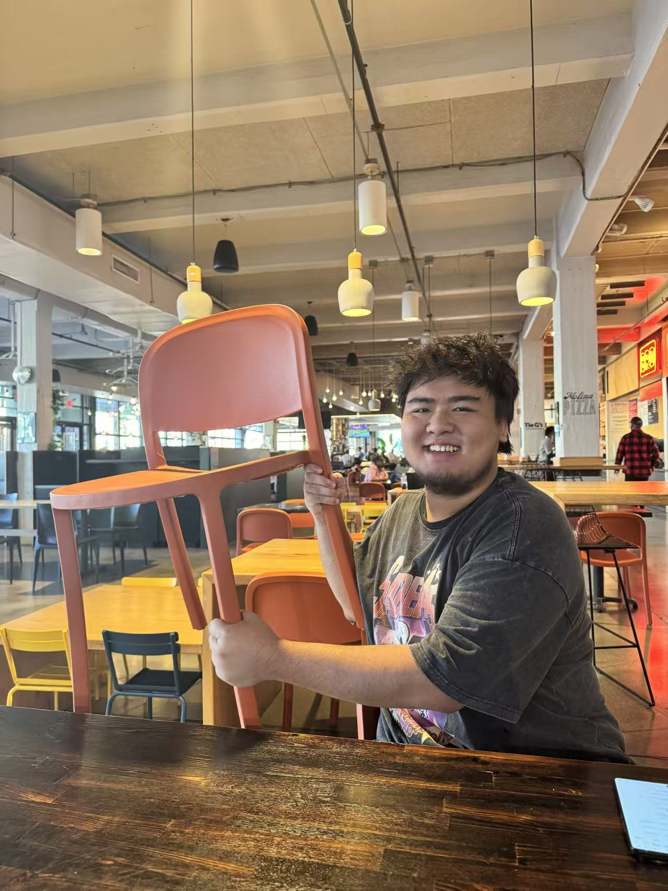
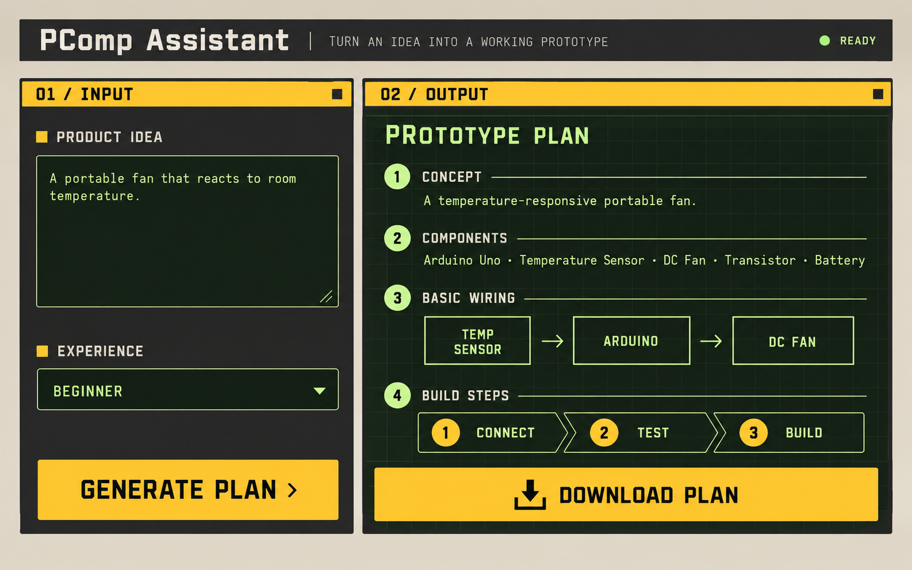
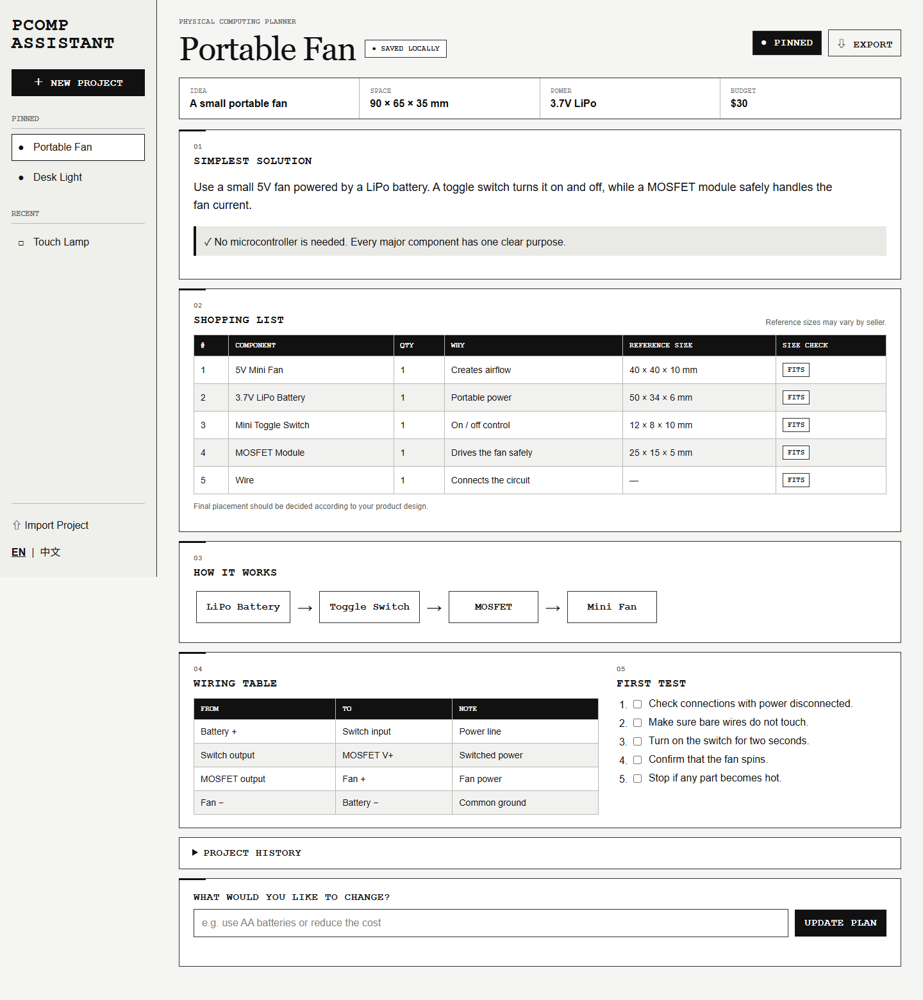
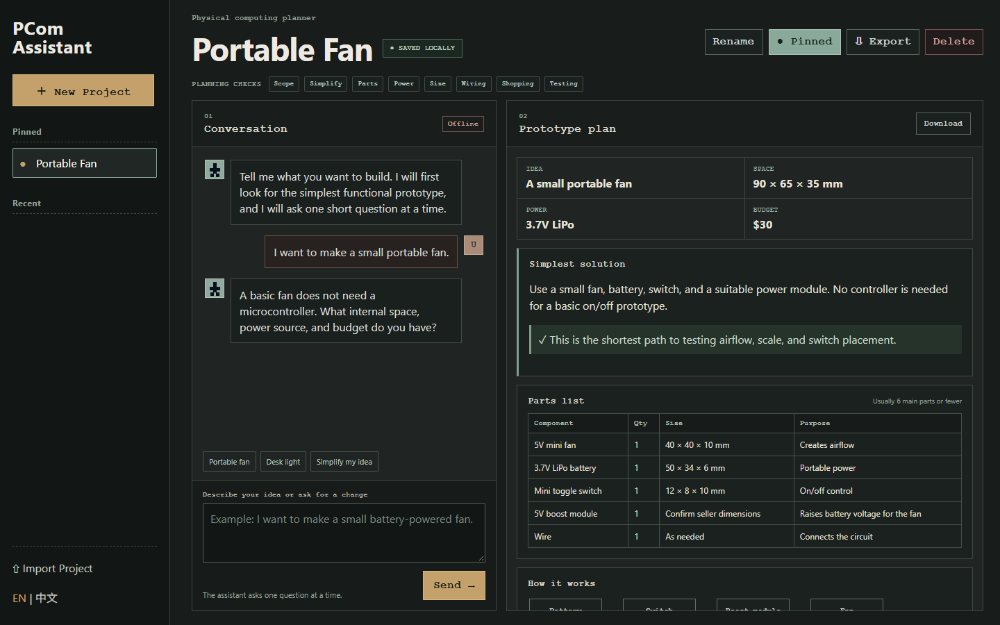

Interface sketch
The first drawing established a project library, a conversation area, and a structured plan on one page. I removed image generation and internal product-layout advice to keep the scope realistic.
MIDTERM · WORKING DRAFT
PCom Assistant is a web tool that helps product designers choose a simple electronic approach, make a short parts list, and prepare a safe first test.

01 / THE PROBLEM
Charlie can communicate a product idea through sketches and 3D models. The frustrating point comes when the object needs to do something: light up, move air, respond to a button, or run from a battery.
I decided not to make a tool that designs the entire product for him. The narrower goal is to help with the first electronics decisions:
“Be simple” became the main rule. A light with one button should not become an ESP32 project unless programmable behavior is actually needed.
02 / PROCESS
The first drawing established a project library, a conversation area, and a structured plan on one page. I removed image generation and internal product-layout advice to keep the scope realistic.
The first coded version used sample data. It helped me test the hierarchy of the plan before connecting an API: solution, parts, wiring, dimensions, and first test.
With help from Codex, the next version connected the DeepSeek API. The API key stays outside the browser. The assistant asks one question at a time, then returns a structured plan.


03 / AI USE DISCLOSURE
I designed and built the first static draft myself. I used Codex later for the more difficult technical parts required to turn that draft into a working AI tool. DeepSeek is also part of the finished tool: it generates the conversation and plan when someone uses it.
MADE BY ME
CODEX ASSISTANCE
DEEPSEEK IN THE TOOL
My role remained central: I set the scope, chose which features to keep, tested the answers, identified unsafe or overcomplicated suggestions, and decided how the tool should change.
Codex also helped me organize and edit this process documentation based on my project notes, decisions, and testing results.
04 / CURRENT OUTPUT
The current tool keeps the conversation and the plan side by side. A generated plan can include:
The ESP32 section is only generated when the requested behavior needs sensing, wireless control, timing, or programming.

05 / TESTING
The assistant correctly recognized that a basic fan did not need a microcontroller, but it still needed clearer power and size information.
Ask only for missing constraints and keep the controller optional.
The first answer proposed two AAA cells plus a boost module. A second pass found a simpler three-cell circuit, but the suggested LED current was too high.
Add a simplicity audit, conservative LED-current rules, and a required resistor calculation.
The assistant repeated questions that had already been answered, and early language switching translated only part of the page.
Preserve conversation context and translate the full interface, messages, project names, and plan.
06 / ITERATION